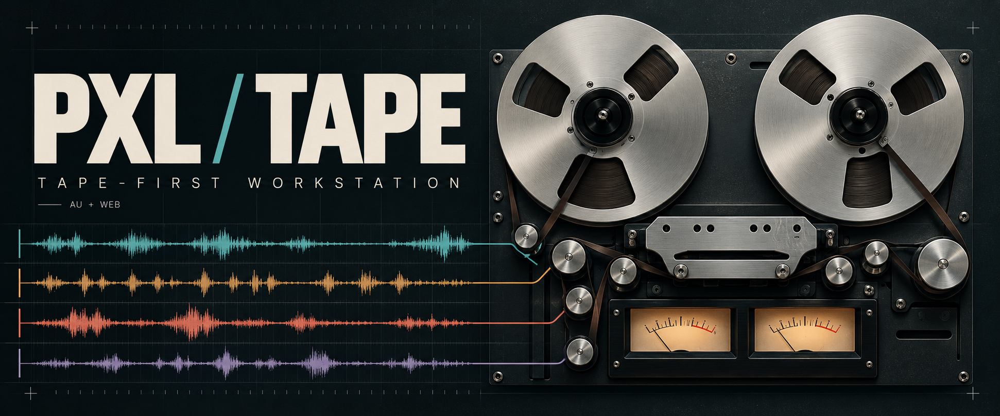
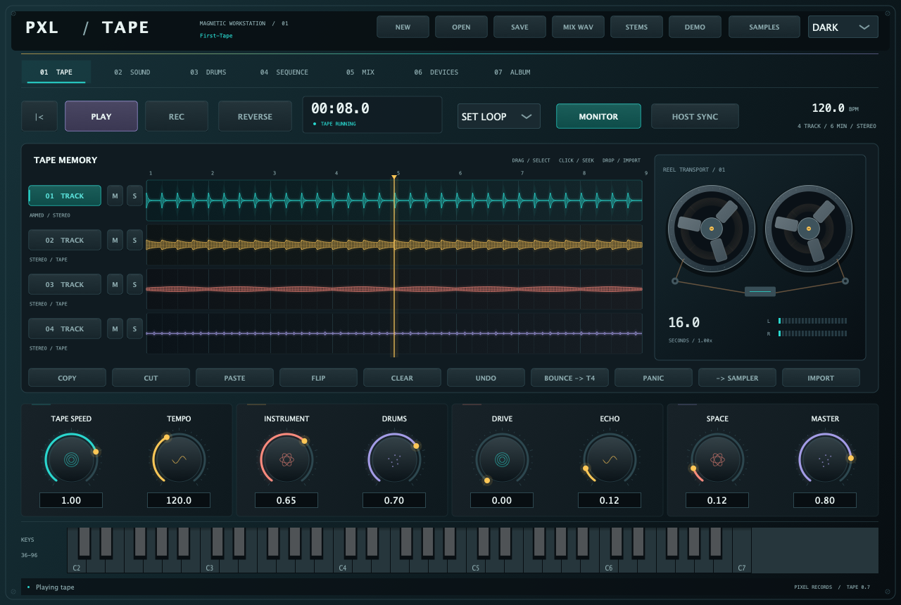

01 / MAGNETIC MEMORY
Tape is the centre.
Four stereo tracks. Record, overdub, cut, copy, flip and bounce. Change tape speed, find a loop, and keep the take that surprises you.

Play a sound. Find a rhythm. Lay it down on tape. A small studio for following an idea wherever it goes, in your browser, as a standalone Mac app or inside your DAW.
Browser: no install or account. Mac: Apple Silicon / macOS 12+.

01 / MAGNETIC MEMORY
Four stereo tracks. Record, overdub, cut, copy, flip and bounce. Change tape speed, find a loop, and keep the take that surprises you.
02 / SIGNAL SOURCES
Analog, FM, organ, pluck, sampler and eight more original PXL engines. Shape them with envelopes, modulation and seven effect devices. Keep favourites in eight named patch slots.
03 / THE RHYTHM SECTION
Play the drum synth, slice your sample, or load the curated Zogg kit through your local bridge. Sequence every pad across eight pattern banks. The kit stays independent of your melody.
04 / PRINT THE MOMENT
Record the live master to album sides A and B. Export WAV mixes, stems and album takes. Save portable projects with your tape, samples, patches and kit embedded.
PXL TAPE / NATIVE RELEASE
Load the notarized AU or VST3 in your DAW, or play the workstation in your browser. Play it from MIDI, build a rhythm and record your performances onto its four-track tape.
Developer ID signed · Apple notarized. AU + VST3 for Apple Silicon. Intel Mac builds are not included.
Unzip the download. Copy whole .component bundles from Components to ~/Library/Audio/Plug-Ins/Components/ and .vst3 bundles from VST3 to ~/Library/Audio/Plug-Ins/VST3/. Back up existing copies before replacing them, then restart and rescan your DAW.
PXL Tape.component into ~/Library/Audio/Plug-Ins/Components/.Open the workstation and tap Enable Audio. Play the keys or pads. Neon Transit opens ready to play. Press Play to hear the 16-bar demo, or New for a blank tape. Your projects and audio stay on your device. Save your project before reloading the page.
The synths, synthesized drums and owned demo work immediately. Curated Zogg sample presets and the eight-pad sample kit load from your own local Zogg library through the optional desktop bridge. Commercial library recordings are not bundled in these downloads. Your saved kit projects can be recalled offline.
AU factory loading, instantiation and stereo MIDI rendering passed on the development Mac. Web engine, worklet and project tests pass. Physical-device audio and compatibility with every DAW remain separate checks.
Plugin SHA256 checksums ↗ · Project source ↗. The notarized download contains the AU and VST3 bundles and installation notes.
Download all Pixel Records / PXL Mac plugins ↗ · Checksums + release notes ↗